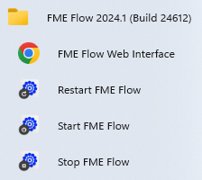
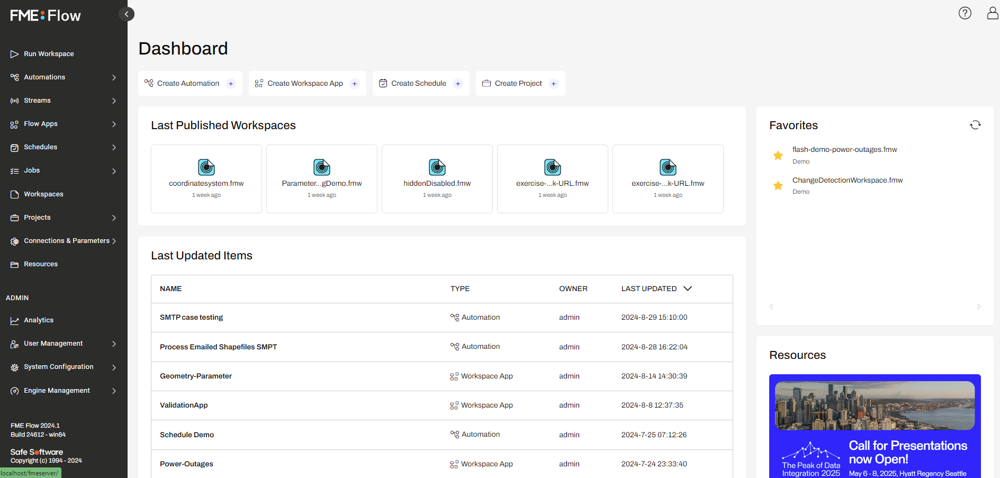
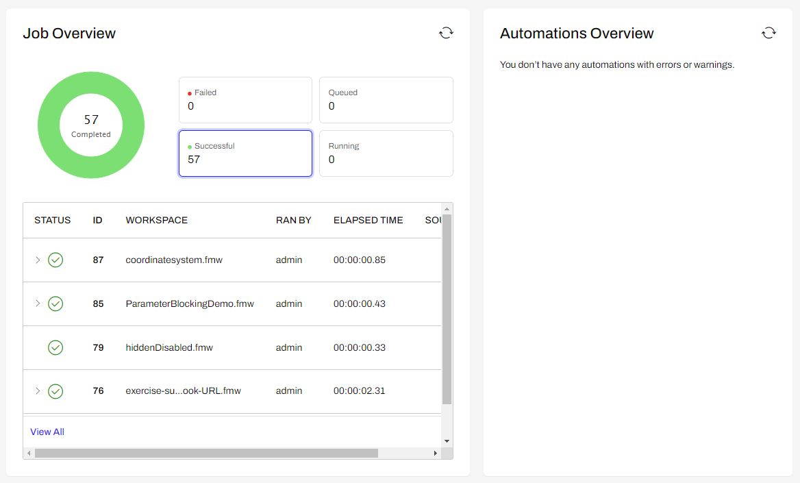
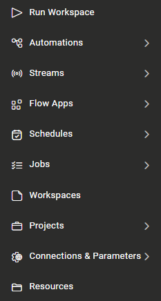

After completing this lesson, you’ll be able to:
Although translations are authored in FME Workbench, the core tools of FME Flow are accessed through a web-based interface.
The web interface is accessed through the URL http://<FMEFlowHostname>:<port>/fmeserver (the port may be optional) or through the start menu:

How you log in will depend on which FME Flow instance you are using.
Safe Software-hosted Training Course
If you are taking a Safe Software-hosted training course, you can access FME Flow at http://localhost/.
A Brand-New FME Flow Instance
If you have just installed FME Flow and you haven’t logged in yet, you will need to log in with the default username/password, which is admin/admin.
FME Flow Hosted
If you are using FME Flow Hosted, see these instructions.
The Home Page appearance and iconography in older versions of FME Flow will look slightly different as these have been revamped in FME Flow 2024.1.
After you log in, the web interface for FME Flow looks like this:

The main part of the interface displays page information. At the top of the landing page, there are quick access shortcuts to the Create Automation, Create Workspace Apps, Create Schedules, and Create Project pages. There are also lists of last published workspaces, last updated workspaces, and favorite workspaces, as well as links to FME resources.
At the bottom of the Dashboard are the Job and Automations Overviews. These display information about jobs and automations initiated from FME Flow.

The left-hand side of the interface is the side menu. Selecting a menu item changes the content of the page to match the menu item chosen. Additionally, the menu will change depending on the user's privileges.
In general, FME Flow functionality is accessed through the web interface menu. There are two main sections in this menu:

The first section relates to the use of FME Flow. It has - among others - options for running a workspace, accessing repositories, setting up schedules, and reviewing job history.
The next section of the menu relates to the administration of FME Flow. It has - among others - options for managing engines, setting up security, and creating system backups.
There are a couple of additional menus located in the top-right part of the interface:
The first provides access to help tools for authors, users, administrators, and developers. The second provides options for managing your user account options.
We want you to get the most out of FME Flow, so we've added more ways for you to learn FME Flow. Under the Help menu, check out FME Flow in action with a demo or ask a specific question in our Community.
Log in to your FME Flow instance and explore the web interface.